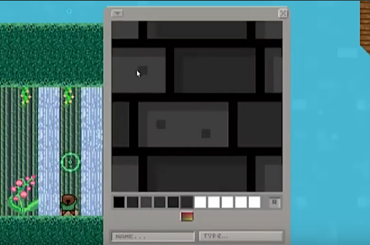
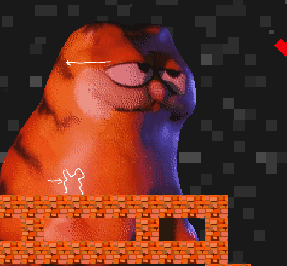

A.K.A., the game that tricked me into learning JavaScript
Q: What the hell is a "many land?"
A: Manyland was a pixel-art platformer sandbox game, in which players could create their own characters, blocks, and even scripts to some extent. Notice I say "was," as Manyland's servers were shut down in February of 2024 due to budget issues.
Luckily, there have been some efforts to archive and reboot the game. I'd recommend checking out the unofficial remake: Thingistan!
This shrine will be less about the history of Manyland and more about my personal experience with the game.
The first screenshot I took, dating back to ~2016.
Q: How does Manyland work?
A: Manyland is divided up into player-made worlds called "areas," where players can explore and collect creations of other players, or create and place their own creations if they can edit there.
There were surprisingly few limits in Manyland, you could make areas as big as you wanted, and create/collect as many items as you wanted.
The create menu, taken from a fan trailer for the game, click to see the video.An example of how talking in Manyland looks. I love that you could see players type and delete characters in real-time!A very zoomed-out image of "the portal of portals," my main hub-world and workshop. Most worlds aren't even 1 MB in size but this bad boy clocks in at nearly 200 MB and was the most pain-in-the-ass to back up.
One of my favorite things about Manyland was the fact that if you saw something you liked, you could "collect" it and use a copy of that object in your own worlds. It was really fun to scour areas for new blocks to use!
Q: Where does JavaScript fit into Manyland?
A: Quite a few places, actually! Aside from the fact that the game itself runs on JavaScript, there were a couple of in-game object types that had JavaScript functionality:
Brains: could be equipped to players to control their movements through code or get information about their surroundings.
Changers: uses code to modify pixel art creations placed inside of them.
Generators: allows for procedural generation in an area by placing blocks through code (the blocks could also be easily removed by removing the generator from the area's settings menu). VERY powerful, as it can be used to make infinite areas.
Happenings: can create visual effects through code. Sadly, happenings were greatly limited by the fact that they could only play animations for 15 seconds at a time.
Honorable mention, Interactings: used its own language instead of JavaScript, limited as it didn't really have proper functions/parameters. Still, could be used to move the player, give items, and could communicate with brains.
This also meant learning JavaScript had many fun applications in Manyland. Some of my favorite uses:
Movement recording: I created a brain to record the player's movements for a short time, then output code for a dynamic, an in-game object used for cell animations.
Generator pranks: generators were added late into Manyland, and few players new about them. If a player gave me the ability to edit in their area, I could stealthily add one of my generators to make a bunch of strange buildings pop up from nowhere.
A generator I made to make the Bee Movie script appear... in a hideous Among Us font I drew. It was always hilarious to watch players explore the text trying to figure out what the hell they were reading.
The "Freaky Friday" brain: I found out how to get brains to communicate with each other, so I made a brain that two players could equip.
The brain would prevent them from controlling themselves and instead allow them to control the other player, hence the name: "Freaky Friday".
HOWEVER, the brain required a specific skin to work, and due to this oversight it meant it could be used to "mind control" players.
Is there a player bothering me in my own area? I could just simply use an interacting to give them the brain and MAKE them walk out of my area. I had basically invented Blood-Bending from Avatar: the Last Airbender. It was very funny to use on players, can't really say the same for my victims, though, heheh!
Here, the astronaut player (victim) is being taken for a walk. They are trying to scream "AAAHHHHH", but because they are being moved against their will, they are just leaving a trail of "H"s.
Image importing: Because changers could manipulate pixel data, I was able to import external images into the game. I used this to import things like my whiteboard drawings and 3D models.
A giant Garfield looms in the far background.
Spectator brain + interacting: While watching other players explore my areas, I found it useful to make a brain + interacting combo to allow myself to "spectate" players. The brain would select the nearest player as a spectator target,
then signal the interacting to teleport me closer to the target whenever they got too far away.
It was handy whenever I wanted to eat my dinner without having to adjust my player so I could see what the target was doing.